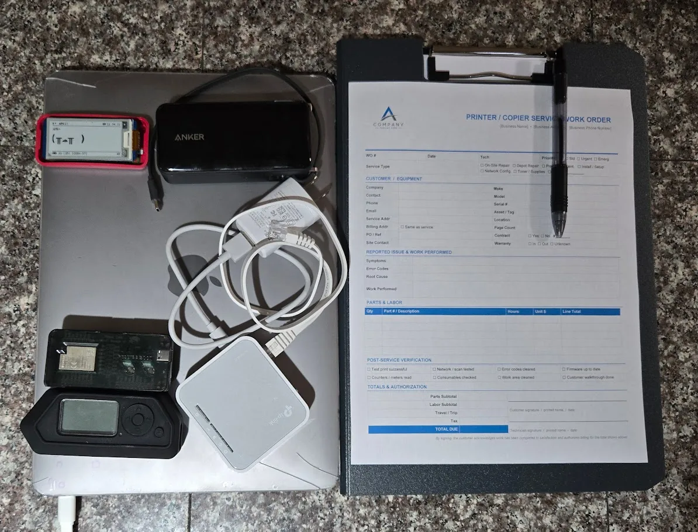

The Cheapest Tool in the Kit
People expect a physical pentester to look like the movies. Black hoodie, black gloves, lockpicks in a velvet roll, a USB Rubber Ducky tucked into a sleeve. The truth is more boring and a lot more effective.
The single most powerful tool in my kit is a clipboard. The second is what I'm wearing: a tucked-in collared shirt, dark slacks, polished leather shoes, and a thin laptop bag over one shoulder. Plain, professional, forgettable. It costs less than a tank of gas, and it lets me walk past more controls than any zero-day ever has.
The shoes do more work than people give them credit for. Nice leather shoes — actually polished, not just clean — quietly signal that the person wearing them has somewhere to be and is being paid by someone who cares how they look. Receptionists and security guards check shoes without realizing they're doing it. Scuffed sneakers and a button-up read as kid running an errand; polished leather and the same shirt read as the vendor my boss told me to expect. It's a five-minute investment with a buffing cloth that buys you ten minutes of nobody asking who you are.
The reason is simple: humans pattern-match on roles before they pattern-match on faces. A clipboard plus business-casual dress plus the right kind of bored expression reads as vendor here for a scheduled job, and a vendor reads as someone else's problem. Nobody wants to be the receptionist who challenged the printer tech and got chewed out for slowing down a billable visit. So they wave me through.
Business casual also does something a hi-vis vest can't: once I'm past the lobby, it lets me blend. Most of the people I'm walking past on the way to the second floor are dressed exactly like me. Field techs from the kinds of companies I'm impersonating — printer repair, copier maintenance, low-voltage cabling, MSP onsite engineers — almost always show up in business casual rather than uniforms. The wardrobe doesn't just sell the entry; it sells everything that happens after it.
The rest of the props budget rounds out at about forty dollars: a generic vendor-style badge in a clear holder (printed on cardstock and clipped to the laptop bag's strap), a small zippered tool case in the bag, a microfiber cloth in a side pocket — printer techs are always wiping something down — and a phone in hand for "checking the dispatch."
One thing in the bag isn't a costume piece: a Flipper Zero. It's a pocket-sized multitool that handles 125 kHz and 13.56 MHz RFID, sub-GHz radios, NFC, IR, and BadUSB out of one device. On a physical job it earns its keep half a dozen ways: reading and cloning the cheap 125 kHz badges still on a depressing number of doors, sniffing parking-gate fobs while I sit in my car doing recon, capturing the IR remote for a conference-room display so I can look like I belong while futzing with it, and quietly logging the Bluetooth Low Energy devices broadcasting in the lobby — phones, AirPods, and fitness trackers routinely advertise their owner's first name in the device label ("Sarah's iPhone"), which cross-references nicely with the employee list I pulled from LinkedIn during recon. It looks like a Tamagotchi and behaves like a small Faraday-busting Swiss Army knife. None of what it does is exotic on its own — it just collapses six tools into one device that fits in a shirt pocket.
Riding in the same bag is a Raspberry Pi running Pwnagotchi. It sits there passively, listening for WPA/WPA2 four-way handshakes on whatever Wi-Fi is around — corporate, guest, neighbor, parking lot. By the time I leave the building, it's quietly collected a stack of .pcap files I can take home and feed to hashcat. It pairs nicely with the wifi-pentest deliverable: a list of which corporate SSIDs cracked, in what time, on what hardware. No active probing, no deauth, nothing that would trip a half-decent WIDS — just a small device politely eavesdropping on the air.

The Work Order
The single highest-leverage piece of paper on the clipboard isn't a notepad — it's the work order. I print one for every engagement, and I don't go in without it.
The work order is a single sheet that looks exactly like the kind of dispatch ticket a real field tech would carry: company logo at the top, the target's name and address pre-filled, a scheduled arrival window that brackets the time I plan to walk in, a short work description ("Quarterly maintenance — Konica Minolta C658, 2nd-floor copy room"), a dispatcher phone number, and a signature block at the bottom for the on-site contact. I usually pose as a tech from a real, locally-known company — a regional printer repair outfit, a low-voltage cabling shop, an HVAC contractor, anyone whose vans the receptionist has actually seen in the parking lot. Familiar beats plausible every time.
The reason this works isn't just the paper. It's that the paper gives the receptionist something to do. Humans don't trust strangers — but they do trust gestures. When somebody asks who I'm here for, I don't argue or explain. I rotate the clipboard ninety degrees and hand it across the counter. Now they're holding the prop. They glance at the company name, see the address matches their building, and the cognitive load of challenging me has just doubled. Most of the time they hand it back, point at the elevator, and ask if I need them to call anyone up. I say "Nah, they know I'm coming, I'll just head up," and we're done.
If they do read the ticket carefully, that's fine — every detail on it has to survive scrutiny. The dispatcher number rings to a burner that I answer in character. The company name is real. The work description matches equipment that actually lives in the building (this is a recon find, not a guess). The signature block at the bottom is the closer: when I leave, I ask the on-site contact to "sign off so I can close the ticket." They almost always do, because they've been signing maintenance tickets for their entire career and the muscle memory is automatic. That signature, photographed, becomes a finding in the report.
I keep a metadata-scrubbed Work Order template (DOCX + PDF) in my public templates repo, alongside a few other pentest and audit docs. Take it, edit it, use it on authorized engagements: github.com/SkyzFallin/Templates.
Recon You Can Do From a Coffee Shop
The fun part of this work is that almost all of it happens before I ever touch the building.
I sit in a coffee shop two blocks away with a laptop and burn an afternoon learning more about the target than most of their employees know. Google Maps Street View gives me door types, badge readers, lobby layout, and the location of the smoking area. LinkedIn gives me employee names, lanyard colors, and which reception desk fronts which floor. Job postings reveal which printer brand they use, which ticketing system they buy, and what their MSP's name probably is. Quarterly investor reports occasionally tell me which rooms are climate-controlled.
Then I sit somewhere that overlooks the front entrance and just watch for an hour. Smoke breaks cluster between 9:50 and 10:10 and again around 2:30. Delivery vans show up around the same windows on the same days. The receptionist takes lunch from 12:15 to 12:45 — and there's almost never a backup. Late afternoon, the door props open with a small wedge for the mail courier and stays propped for forty seconds longer than it should.
None of this is illegal. None of it costs anything. By the time I walk in, I'm not improvising — I'm executing.
Everything in this post happened on authorized engagements with signed scope, a get-out-of-jail letter in my pocket, and at least one named point of contact who knew I was coming. Doing any of it without that paperwork is not pentesting. It's a felony.
The Walk-In
The favorite entry isn't the one with the badge reader. It's the smoke door. Tailgating a smoker who is already irritated about getting back to a stuck spreadsheet is one of the most reliable techniques in the field. They don't want to hold the door for you and they especially don't want to challenge you. They want their fingers on a keyboard. So they hold the door, pretend not to look at you, and walk off.
If the smoke door doesn't work, the lobby usually does. The line that has worked for me more times than I can count is, "Hey — I'm here for the printer. Front desk said to head up, second floor?" The receptionist is going to do one of two things: nod and point, or pick up a phone to verify. Nine out of ten times, they nod. The tenth time, I have a story ready about being early and offer to wait. Either outcome is fine. The point is to never look like waiting bothers you.
Once I'm through the lobby, I walk like I belong. Confident pace, eye contact with nobody, clipboard up. I pause occasionally to write something down, because someone writing on a clipboard is busy and busy people don't get stopped.
Once You're Inside
The first thing I do is stop being impressed with myself, because the inside of an office is where most pentesters get cocky and burn the engagement. The clock is now running and every minute I'm in the building is a minute someone might recognize that I don't.
Priorities, in order:
- Photographs. Whiteboards. Sticky notes on monitors. Network diagrams taped inside server-room doors. Printer queues with badge IDs on them. The phone-list pinned next to the break-room microwave. None of this is glamorous. All of it shows up in the report.
- Open ports. I'm looking for live RJ45 jacks behind unused desks, in conference rooms, and in the back of break-room TVs. The IT closet on the second floor is great if I can reach it, but the unused cubicle next to the copy room is almost as good and far less likely to be noticed.
- USB drops. A handful of cheap drives, labeled things like "2026 Bonus Plan" or "Layoff List - DO NOT FORWARD," get left near the printer, in the kitchen, and one taped to the underside of a conference-room table. The pickup rate is depressing.
- Server room. If the door is propped — and it is, more often than you'd believe, usually with a fire extinguisher because the room runs hot — I walk in, take photos, and walk out. I don't need to touch anything. The photo of the open door, with timestamp, is the finding.
The Drop Box
The single highest-value thing I plant is also the smallest: a battery-backed wireless access point, configured to mesh out to a 4G hotspot in my car or to call home over a cellular module of its own. I plug it into a live Ethernet jack behind a desk nobody uses, tuck it under a power strip, and walk away.
From the parking lot, I now have a tunnel into the internal network that doesn't traverse the corporate firewall, doesn't show up in their VPN logs, and persists for as long as the box has power and the jack stays alive. From a pentest perspective, this is the prize. Initial physical access turns into ongoing remote access, and ongoing remote access turns into a much more interesting engagement than "I walked in." Every internal pivot I do from that point on looks, to their SOC, like traffic from inside the building — because it is.
The picture most people have in their head for a drop box is something like a TP-Link AC750 travel router — the thirty-dollar palm-sized thing flashed with OpenWrt that fits behind a power strip. I'm referencing it here because it's the easiest way to visualize the form factor and the attack: small, USB-powered, indistinguishable from any other lump of plastic on a desk. I do not recommend actually using one for this work. Recent US government guidance has scrutinized routers manufactured by certain foreign vendors over supply-chain and firmware-trust concerns, and TP-Link specifically has been the subject of ongoing federal review. Bringing one onto a regulated client's network puts an awkward sentence in the report and a worse one in the conversation that follows.
The right answer is one of two things, and both are vastly preferable to a TP-Link in a sensitive environment. The first is a custom Raspberry Pi build: a Pi 4 (or Compute Module 4) with a USB-Ethernet adapter and a Quectel cellular modem in a small 3D-printed project box. You control every line of the firmware, every package on the disk, and every byte that leaves the box. For engagements where the supply-chain question matters — government, defense, financial, healthcare — this is the cleanest answer.
The second is Hak5's purpose-built lineup. US-designed, well-documented, built specifically for this work, and trusted by enough red teams that a finding referencing one doesn't raise eyebrows the way "we plugged in a foreign-made consumer router" will. Pick from:
- LAN Turtle — disguised as a USB Ethernet adapter. Plugs into the back of a desktop's USB + RJ45 jacks; the user just sees a working network connection. Probably the best disguise of any of these for desk-level drops. ~$50.
- Packet Squirrel Mark II — sits inline on an Ethernet run, runs payloads, USB powered. Good for tap-and-implant in one device.
- Shark Jack — battery-powered, plugs into an Ethernet jack, runs a payload, walks away. More for quick recon than persistent access.
- Bash Bunny / Key Croc — different threat model (USB HID), but worth knowing about for keystroke-injection scenarios where you can briefly touch a workstation.
The defense is the same regardless of what hardware the attacker brings: 802.1X on every port, MAC filtering as a tripwire, monitoring for unexpected DHCP leases, and physical port-disable on jacks that aren't in use.
Most networks I've tested have hardened the internet edge to a fault and left the inside flat. A device plugged into an internal jack often gets a DHCP lease, a DNS server, internal name resolution, and unfiltered access to the same resources a sales rep's laptop sees. Once inside, lateral movement is rarely the hard part.
The Part Nobody Writes About: How You Leave
Most blog posts about physical pentesting end at the photo of the server room. Mine doesn't, because the most important hour of the engagement happens after the work is done.
I always — always — exit on good terms. Pass or fail. Whether I sailed in unchallenged or got stopped at the lobby and had to produce my letter, the exit looks the same: I find the on-site point of contact, shake hands with anyone I challenged or who challenged me, thank the front desk by name, and leave a business card with the IT lead. If somebody caught me, they get a sincere "good catch" and a few minutes of my time before I leave. If somebody didn't, they get the same warmth — because none of this is about embarrassing them.
There are three reasons this matters, and only one of them is about being a decent person.
1. Multi-site engagements depend on it.
A lot of these jobs are not one office. They're three. Or twelve. If I storm out of the Tacoma branch with everyone whispering about the weird printer-repair guy who wandered the wrong floors, that story reaches the Spokane and Boise branches by Friday afternoon. The next visit is contaminated before I park the car. By treating every exit as if I'll be back next week, I keep the surprise of the engagement alive across the rest of the scope.
2. Cops are slow to call back.
I carry a get-out-of-jail letter, and it works. But "works" means "the police will eventually verify it and let me go." It does not mean "no police will arrive." A clean exit, with a smile and a card and a clear handoff to the on-site contact, dramatically reduces the odds that anyone calls 911 in the first place. That saves the engagement, the police's afternoon, and my evening.
3. The findings land softer.
If the team that just got beat up by a stranger in a button-down also got a handshake and an honest debrief from that same stranger, the report I send next week reads as collaboration. If they got the silent treatment and a slammed door, every finding reads as humiliation. I want the IT team to defend my report internally as a roadmap, not bury it as an attack. Walking out warmly is what makes that possible.
The job is to find the holes. The craft is to leave the people who own those holes glad they hired you.
What Actually Fixes This
Defenders ask me what to buy after one of these engagements. Almost nothing on the answer is a product.
- Challenge culture. The cheapest, hardest control in this whole post. Train every employee to ask, with a smile, "Hey — who are you here to see?" and to wait for an answer. That single sentence ends 80% of physical engagements at the lobby. Reward the ones who use it. Make it a story they tell, not a confrontation they avoid.
- Visitor sign-in that actually verifies. Not a tablet that prints a sticker. A real callback to the host before the visitor leaves the lobby. If the host doesn't pick up, the visitor doesn't move.
- 802.1X on every wired port. If a strange device plugs in and doesn't speak the protocol, it gets a quarantine VLAN with nothing on it. This kills the drop-box attack outright.
- Disable unused jacks at the patch panel. Empty cubicles do not need live ports. Half-empty offices have dozens of these.
- Physically secure the server room. If the door props, fix the airflow. If the airflow is fine, fix the door. Pick one.
- Badge print and color discipline. Don't put your logo, employee photos, or department color codes on public-facing employee profiles. You're handing me the prop list.
- Awareness training that isn't a 45-minute video. A ten-minute story about a real (sanitized) walk-in, told once a quarter by someone the staff actually knows, beats any e-learning module on the market.
Why This Matters
The reason I write up engagements like this — and the reason I'd encourage every IT and security leader to commission one — is that most organizations have spent the last decade hardening the internet edge while leaving the front door wide open. The threat model has shifted. The cost of getting a person physically into your building has dropped to about forty dollars and an afternoon of recon. The defenders' tools have not kept pace.
The good news is that most of the fixes are free. Challenge culture, jack discipline, and a working visitor sign-in process will stop a clipboard-and-collared-shirt pentest cold. They'll also stop the next person who shows up with similar ideas and no get-out-of-jail letter.
One More Thing: AI Isn't Taking This Job
A lot of security work is quietly being chewed on by automation. Vulnerability scanning, log triage, code review, even initial recon — the tooling keeps getting better, and a lot of analyst-grade tasks are going to look very different in three years. Physical pentesting is not on that list.
You can't ship a model into a lobby. You can't have a language model read the receptionist's mood and decide whether to push or wait. You can't automate the moment when a security guard makes eye contact and you have to decide, in less than a second, whether to smile and keep walking or pull out the work order and engage. The job lives in pretexts, body language, the smell of the parking lot, the rhythm of a lunch crowd, and the quiet judgment call about which propped door is being watched on a camera that someone actually monitors. None of that is going into a context window any time soon.
AI is a fantastic force multiplier for the parts that surround the engagement — drafting work orders, scraping LinkedIn for org charts, summarizing recon, even rehearsing pretexts as a warm-up. I use it daily. But the engagement itself is, and will remain for the foreseeable future, a human walking into a building and reading the room. If you've been wondering whether physical-security testing is a discipline worth investing in: the half-life of this skill is much longer than most things on the security org chart.
If you read this far and recognized your own building somewhere in the description: that's the point. Get someone in there before someone gets in there.
The thing I keep coming back to, after a decade of doing this work, is that the people on the other side of the engagement aren't the enemy. The receptionist who waved me through is somebody's mom, working the front desk because the company hasn't staffed a real visitor-management process. The security guard who didn't challenge me is doing a job that pays barely above minimum wage to be the last line of defense for a million-dollar IT investment. The IT lead who finds out a stranger in a button-down spent forty minutes wandering their second floor isn't bad at their job — they're just one person trying to defend a building designed for convenience.
The story I tell in the debrief is never "look how I beat you." It's "look at what your building is asking of the people in it, and how little it gives them back." Most of the time, by the end of that conversation, the IT lead is the one writing down the fixes — and the receptionist is the one who tells the next person in a button-down to wait while they make a phone call. That's the win. The report is just the receipt.